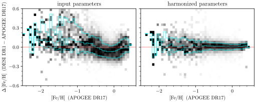
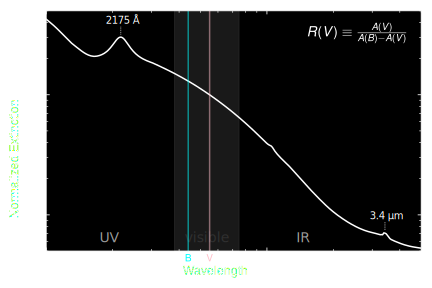
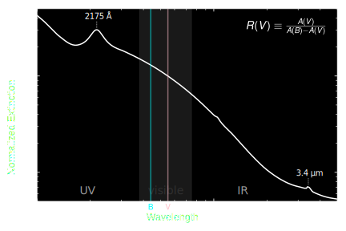
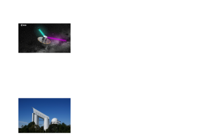
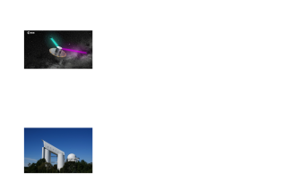
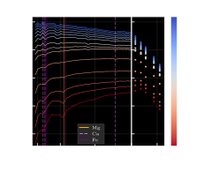
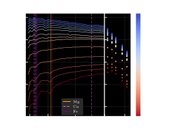
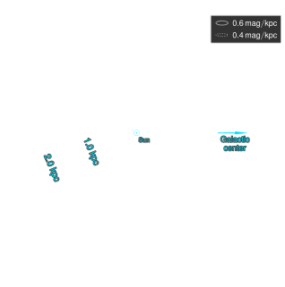

Astrotune
Bringing stellar parameter catalogs into harmony
Gregory M. Green, Max Planck Institute for Astronomy, Heidelberg
NAOC, Beijing, 8 July 2025
Many large stellar spectroscopic surveys
SDSS APOGEE (DR17)
LAMOST (DR10)
GALAH (DR4)
SDSS-V
DESI (DR1)
Multiple stellar parameter catalogs per survey
E.g., LAMOST
vs.
LAMOST Data-Driven Payne
vs.
LAMOST HotPayne
vs.
LAMOST Cycle-StarNet for M-dwarfs.
Different catalogs disagree

“Astrotune”
Autotune for your stellar parameters.
Mapping to the “harmonized” space
Mapping to the “harmonized” space
Integrate trajectory in parameter space $\vec\Theta$:
$$\frac{\mathrm{d}\vec\Theta}{\mathrm{d}t} = \vec{v}\left(\vec\Theta,t\right) \, .$$
Integrate from $t = 0$ to $1$ ($t$ is just an integration variable).
Different mapping for each catalog.
“Pair loss”: How well do the catalogs agree?
Regularizing the mappings
What we want:
- Pairs of surveys to agree.
- “Minimal” transformation.
- No data? ⇒ Don't change parameters.
| Survey | # of Paired Stars |
|---|---|
| LAMOST DD-Payne (DR9) | 834,289 |
| LAMOST MRS | 627,582 |
| APOGEE (DR17) | 350,483 |
| DESI (DR1) | 288,311 |
| SDSS-V (ASPCAP) | 250,144 |
| LAMOST M-Stars (Ding) | 198,267 |
| LAMOST M-Dwarfs (Zhang) | 190,443 |
| GALAH (DR4) | 155,090 |
| LAMOST HotPayne | 71,704 |
| SDSS-V (BOSSNet) | 64,151 |
| RAVE (DR6) | 59,956 |
| DESI (Zhang) | 47,569 |
| VMP (Li) | 198 |
| PIGS | 103 |
Input catalogs
Input catalogs
Everything is implemented in a machine-learning framework (Tensorflow).
Model optimization: stochastic gradient descent on batches of pairs.
Results
Transforming individual surveys
Harmonizing pairs of surveys
Harmonizing pairs of surveys
APOGEE (DR17) + LAMOST (DD-Payne)
APOGEE (DR17) + GALAH (DR4)
APOGEE (DR17) + DESI (DR1)
DESI (DR1) + DESI (EDR, Zhang et al.)
Metallicity systematics

Systematic trends removed. Scatter decreases!?
⇒ Transformation also depends on $T_{\mathrm{eff}}$ and $\log g$.
Input catalogs
Harmonized catalogs
Harmonized catalog
~8.4 million unique stars with high-SNR measurements.
Example science use case:
The dust extinction curve
Work conducted with Xiangyu Zhang (张翔宇).
3D Dust Mapping
The dust “extinction curve”
 

The extinction curve and grain-size distribution
Dust density
Dust R(V)
Data
Gaia parallaxes


How to extract information from XP spectra?
 



Training data
(“Ground truth”)
LAMOST Data-Driven Payne + LAMOST HotPayne
2.4 million stars.
Sharp cut at $T_{\mathrm{eff}} \approx 7000\,\mathrm{K}$.

 

Learned stellar models of Gaia XP spectra
Learned extinction curve

Remove stars with bad $\chi^2/\mathrm{dof}$, low extinction, ...
~130 million R(V) measurements with XP (Zhang & Green 2025)





R(V) in the Galactic plane
R(V) in the Magellanic Clouds

For the first time, we can “see” the dust properties throughout much of the Milky Way in 3D.
Surprising results:
- U-shaped relation between density & R(V).
- Star-formation / UV radiation correlated with high R(V).